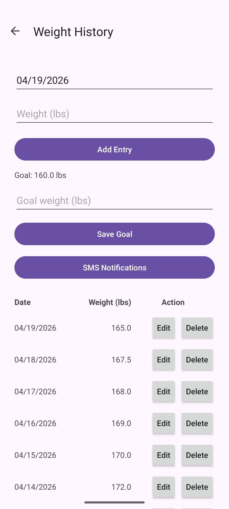
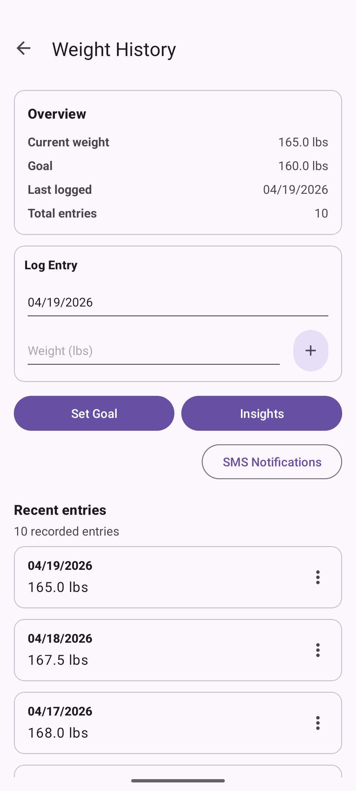

About the artifact
For this enhancement, I worked on improving Mere Metrics: Weight Tracker, a native Android application I originally built in a mobile architecture and programming course. The app is written in Java and was developed in Android Studio. It already included features like creating an account, logging in, secure password hashing with PBKDF2, and storing user data such as goal weight and daily entries in SQLite. It also let users add, edit, and delete weight records, and included an SMS notification feature based on goal progress. Instead of adding more features this time, I focused on improving the software design and engineering of the application rather than layering on unrelated new functionality.
Why I included this artifact
I selected this artifact for my ePortfolio because it shows a full mobile app experience in one project. It covers UI design, screen navigation, backend logic, data storage, and even some basic security practices. The original version worked, but most of the logic was centered inside fragments, which made everything feel harder to update later. So for this enhancement, I reorganized the project into clearer layers: ui, service, data, model, and util. I also replaced the old way of showing weight history with a RecyclerView setup, which is more efficient. On top of that, I moved validation and workflow logic out of the fragments and into service classes. This made the code easier to read and reuse, and it helped separate responsibilities better without changing the original application behavior.
Course outcomes alignment
This enhancement met the course outcomes I originally planned to address in my enhancement plan, especially outcomes 1, 2, 4, and 5, while also partially supporting outcome 3. It supports outcome 1 by making the project easier for another developer to understand, maintain, and extend through better modular design and clearer organization. It supports outcome 2 through the written narrative, code review, and my ability to explain the refactor and the design trade-offs in a professional way. It directly supports outcome 4 because I applied software engineering techniques like architectural refactoring, reusable UI component design, service-based workflows, and improved separation of concerns. It also supports outcome 5 by preserving security-related behaviors such as password hashing, session handling, input validation, and permission-aware SMS functionality. My main update was holding off on a deeper database redesign for this enhancement, since that made more sense as a later improvement.
Reflections on the enhancement process
Through this enhancement, I learned that improving software design isn’t just about moving code into more files. It’s about deciding where responsibilities belong and making the application easier to understand, maintain, and extend. Refactoring the app showed me how much cleaner the user interface becomes when business logic, validation, and persistence-related work are no longer all handled directly in the fragments.
One of the biggest challenges was preserving the original behavior of the application while reorganizing its structure. I had to make sure features such as login, goal updates, weight entry, editing, deleting, and SMS-related behavior still worked after the refactor. I also started to see that there’s a balance between improving structure and overdoing it. Even though some parts like the repository layer are still pretty simple, this update gave me a much stronger base to build on later and helped me understand real trade-offs that come with software design decisions.
Before and after
The weight-tracker screen, the application’s primary screen, before and after the refactor. The changes are visible at a glance: what was a flat list of inputs above a manually generated table becomes a card-based layout with a stats summary, a clearer log-entry area, a dedicated entry point to the analytics view, and a RecyclerView-backed list with per-entry overflow menus.

TableLayout of past entries into a single flat scroll. Adding a new entry, updating a goal, and reading history all shared one dense screen.
RecyclerView with per-row overflow menus. Goal-setting and entry-editing are now handled through dedicated dialogs rather than inline fields.